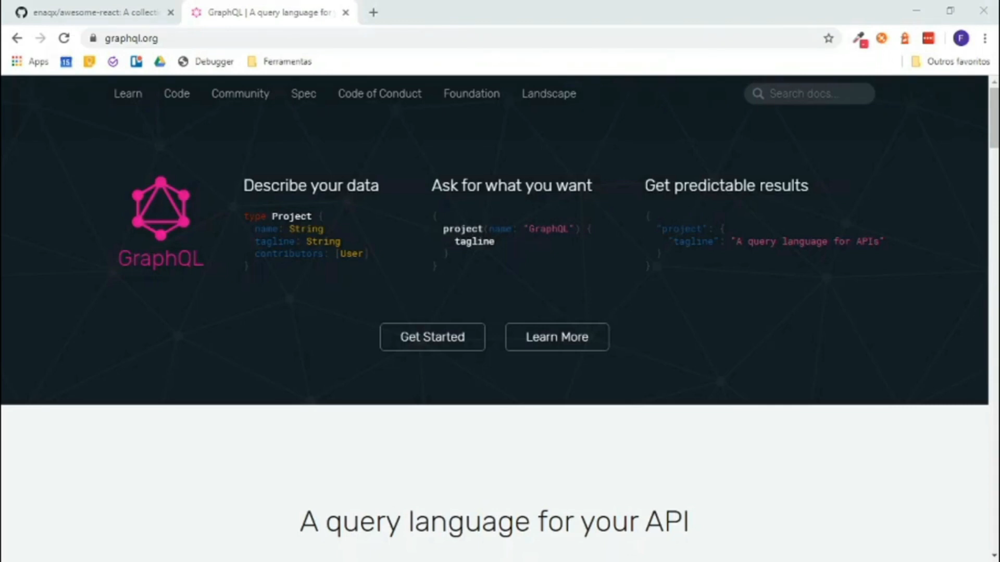

GraphQL significa Graph Query Language, como o nome sugere é uma linguagem de query assim como SQL (Structured Query Language) porém seu uso não envolve implementar banco de dados, mas sim, definir dados seja para API ou servidor.
O Graph em GraphQL é para gráfico. O time do Facebook responsável pela linguagem aposta num modelo mental gráfico como uma forma de definir os dados. Dessa forma, a linguagem oferece a habilidade de modelar dados usando schemas. O resultado disso é um paradigma muito parecido com o formato JSON. Por exemplo, para definir um dado que representa um usuário com id, name, email e bio, teríamos o seguinte schema:
type User {
id: ID
name: String
email: String
bio: String
}
QL
A proposta do GraphQL, porém, não é apenas definir dados em schemas mas também fazer possível que consumidores desses dados disponham de uma forma padronizada de consumi-los. É aí que entra o QL do termo, já que podemos usar uma linguagem de query para fazer chamadas e consumir tais dados. Dessa forma, para consumir dados usando o exemplo de usuário acima, podemos fazer queries como:
query getUsers {
users {
name
bio
}
}
query getUserById {
user(id: "123") {
name
bio
}
}
Note que nas queries acima está descrito que apenas queremos os itens name e bio do usuário ignorando, assim, os itens id e email. Como toda boa linguagem de query, GraphQL permite especificar apenas os campos desejados para uma determinado uso, isso aprimora performance quando temos um dado grande e queremos apenas parte dele.
Como resultado da query acima temos o resultado representado em JSON:
{
name: "Maria",
bio: "Uma garota legal"
}
